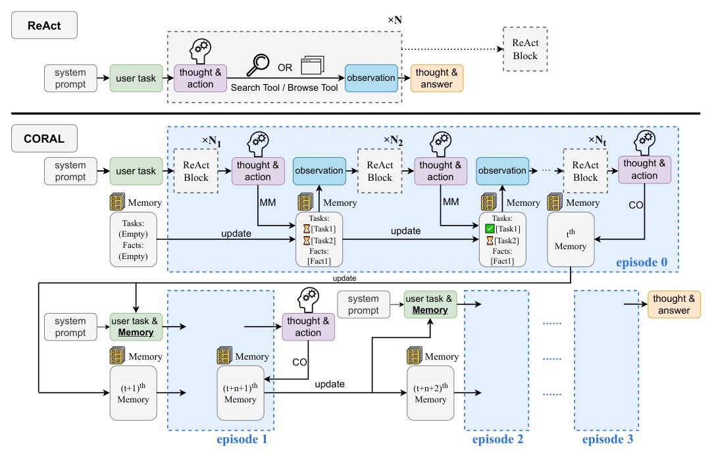
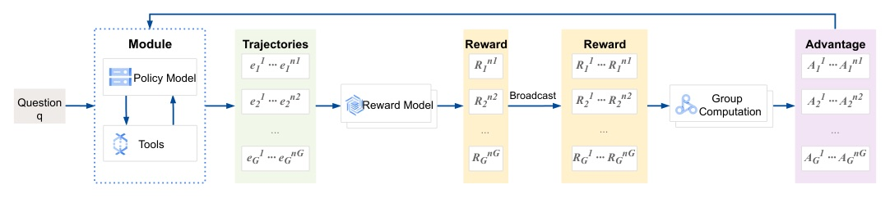

Venue：PDF 每頁頁首「Published as a conference paper at COLM 2026」· 程式碼 github.com/JIA-Lab-research/CORAL · 選題：daily_discover 週六清單中 ★ COLM accepted · Reviewer 資料：未抓取
長任務 agent 的 context 會被工具輸出塞爆。CORAL 給 agent 兩個工具：MM 把進度與已驗證事實寫成 checkpoint，CO 清空 context、只帶 checkpoint 重開。SFT + 多 episode RL 後，Qwen3-8B 在 GAIA 拿 42.8%，輸入 token 比 ReAct 少 6–7×；不需訓練，就讓 Claude Sonnet 4 在 BrowseComp +8.0。
s：system prompt；q：問題；r / a / o：thought / action / observation。ReAct 每一步都以完整歷史 ct 為條件。
| 路線 | 代表 | 問題 |
|---|---|---|
| 固定間隔壓縮 | Mem1（每次 function call 後壓縮） | 排程僵硬，可能丟掉有用資訊、打亂高層規劃 |
| 快滿時截斷 / 壓縮 | 外部模型摘要、直接截斷 | 時機與任務狀態無關 |
| 處理固定長輸入 | MemAgent | 針對靜態長文件，不處理互動中動態長出的 context |
| Agentic RL | Search-R1 類 | 長任務 reward 稀疏，中間動作難以 credit assignment |


評估：GAIA text-only val 103 題（L1 39 / L2 52 / L3 12）；每題 8 次取樣，temp 0.7、top-p 0.8，報 Pass@1 = Avg@8。工具：Web Search、Web Browse + MM、CO。
| 模型 | L1 | L2 | L3 | Avg |
|---|---|---|---|---|
| WebDancer-7B | 41.0 | 30.7 | 0.0 | 31.0 |
| WebSailor-7B | - | - | - | 37.9 |
| CK-Pro-8B | 56.4 | 42.3 | 8.3 | 43.7 |
| Qwen3-8B ReAct | 33.3 | 11.5 | 8.3 | 19.4 |
| CORAL Prompting | 28.2 | 19.2 | 0.0 | 20.4 |
| CORAL SFT | 47.1 | 43.5 | 15.6 | 41.6 |
| CORAL RL | 46.2 | 45.7 | 19.8 | 42.8 |
CK-Pro-8B 平均較高（43.7 vs 42.8），但領先全在 L1（56.4 vs 46.2）；CORAL RL 在 L2 45.7 vs 42.3、L3 19.8 vs 8.3。作者解讀：短題目還沒亂到需要整理，維護記憶反而是額外負擔。
| 模型 | L1 | L2 | L3 | Avg |
|---|---|---|---|---|
| WebThinker-32B-RL | 56.4 | 50.0 | 16.7 | 48.5 |
| WebShaper-72B | - | - | - | 60.1 |
| Claude Sonnet 4 ReAct | 69.2 | 61.5 | 25.0 | 60.2 |
| Claude Sonnet 4 + CORAL | 74.4 | 65.4 | 33.3 | 65.0 |
| OpenAI Deep Research | 74.3 | 69.1 | 47.6 | 67.4 |
| 方法 | 輸入 token | LLM 呼叫 | Peak ctx | MM | CO | GAIA |
|---|---|---|---|---|---|---|
| ReAct | 1,078K | 45.3 | 30.6K | – | – | 19.4 |
| CORAL Prompting | 314K | 21.8 | 14.3K | 20.6 | 4.3 | 20.4 |
| CORAL SFT | 153K | 15.9 | 13.9K | 3.9 | 0.21 | 41.6 |
| CORAL RL | 136K | 15.2 | 12.7K | 4.1 | 0.21 | 42.8 |
| 設定 | 結果 | MM / 軌跡 | CO / 軌跡 |
|---|---|---|---|
| Prompting | 答對 | 20.11 | 2.05 |
| Prompting | 答錯 | 20.69 | 4.80 |
| SFT | 答對 | 3.37 | 0.12 |
| SFT | 答錯 | 4.44 | 0.29 |
| RL | 答對 | 3.30 | 0.12 |
| RL | 答錯 | 4.70 | 0.28 |
| 竄改時機 | 結果 | 原因 |
|---|---|---|
| 剛寫完計畫 | 照單全收，執行到底 | 還沒有任何證據可以對照 |
| 中途竄改已驗證事實 | 常被發現（不穩定） | 產生該事實的搜尋結果仍在 context |
| CO 之後竄改 | 永遠救不回 | 支撐證據已隨 reset 被丟棄 |
此實驗為定性觀察，論文未提供腐化率曲線。
| 指標 | CORAL | ReAct |
|---|---|---|
| 總輪數 | 36 | 47 |
| Web 搜尋 | 17 | 42 |
| 頁面瀏覽 | 11 | 4 |
| MM checkpoint | 7 | – |
| 結果 | 答對 | 放棄 |
| 方法 | NQ | HotpotQA | 2Wiki | Musique | Bamboogle |
|---|---|---|---|---|---|
| Search-o1 | 55.1 | 42.4 | 37.7 | 19.7 | 53.6 |
| R1-Searcher | 52.3 | 53.1 | 65.8 | 25.6 | 65.6 |
| DeepResearcher | 61.9 | 64.3 | 66.6 | 29.3 | 72.8 |
| SimpleDeepSearcher | - | - | 79.8 | 29.4 | 76.8 |
| CORAL | 71.0 | 70.4 | 79.2 | 43.2 | 79.2 |
CORAL 在 2Wiki 略低於 SimpleDeepSearcher（79.2 vs 79.8），其餘最佳。作者也承認：這些題目考的是檢索與彙整，不太會懲罰 context 雜亂，對核心主張是較弱的檢驗。
| Backbone | Benchmark | ReAct | + CORAL | Δ |
|---|---|---|---|---|
| Qwen2.5-7B-Instruct | GAIA | 17.5 | 13.6 | −3.9 |
| Qwen3-8B | GAIA | 19.4 | 20.4 | +1.0 |
| QwQ-32B | GAIA | 26.2 | 32.0 | +5.8 |
| Qwen3-32B | GAIA | 34.0 | 36.3 | +2.3 |
| Claude Sonnet 4 | GAIA | 60.2 | 65.0 | +4.8 |
| Claude Sonnet 4 | BrowseComp（前 150 題） | 22.7 | 30.7 | +8.0 |
| SFT 資料 | #Conv. | L1 | L2 | L3 | Avg |
|---|---|---|---|---|---|
| Full（web + math） | 3,682 | 47.1 | 43.5 | 15.6 | 41.6 |
| w/o math | 3,441 | 47.1 | 40.4 | 14.6 | 39.9 |
| w/o incorrect | 2,030 | 49.7 | 37.5 | 13.5 | 39.3 |
| random subsample | 2,030 | 42.0 | 36.8 | 17.7 | 36.5 |
| Qwen3-8B | L1 | L2 | L3 | Avg |
|---|---|---|---|---|
| SFT Avg@8 | 47.1 ± 4.1 | 43.5 ± 4.5 | 15.6 ± 9.4 | 41.6 ± 3.5 |
| RL Avg@8 | 46.2 ± 3.9 | 45.7 ± 3.7 | 19.8 ± 9.9 | 42.8 ± 1.9 |
| SFT 最差一次 | 41.0 | 38.5 | 8.3 | 36.9 |
| RL 最差一次 | 41.0 | 42.3 | 0.0 | 39.8 |
| SFT Pass@8 | 74.4 | 78.9 | 33.3 | 71.8 |
此頁為編者推論，已與論文內容分開標示。
CO resets bound how long the context may ever become ... Less directly but more powerfully, an agent that has written down its plan and verified facts stops re-searching what it already knows, cutting turns threefold.
CO 重置限制了 context 的最大長度……而更間接、但效果更大的是：把計畫與已驗證事實寫下來的 agent 不會重搜已經知道的東西，輪數因此降為三分之一。§4.3, p.8
Training teaches the model not to reset more but to checkpoint better.
訓練教會模型的不是更常 reset，而是把 checkpoint 寫得更好。§4.3, p.8
The conversation history is not merely redundant with the memory store; it functions as a cross-validation channel, and CO closes that channel permanently for everything the memory currently holds.
對話歷史並不只是記憶庫的冗餘副本，它是一條交叉驗證通道；而 CO 會對記憶中所有內容永久關閉這條通道。App. D.2, p.19
behavior cloning on masked agent outputs supervises the process rather than the conclusion
在遮罩後的 agent 輸出上做行為複製，監督的是過程而非結論。§4.5, p.9
來源：arXiv 2610.40350 · COLM 2026 · 程式碼 github.com/JIA-Lab-research/CORAL